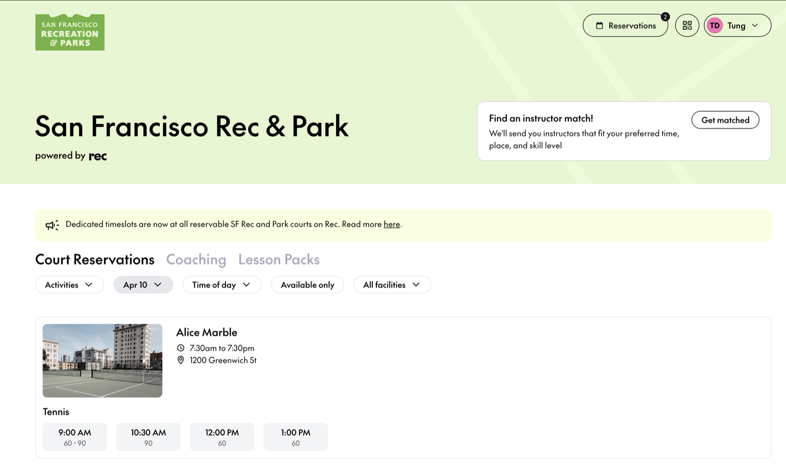
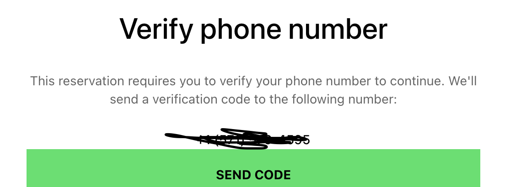
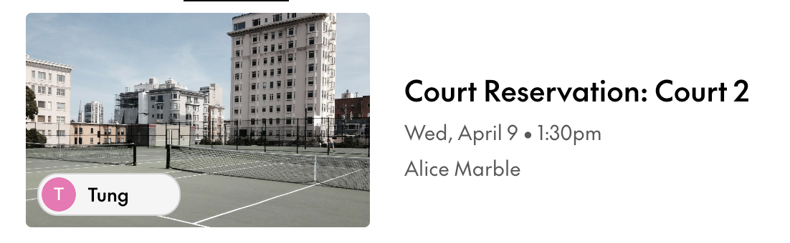
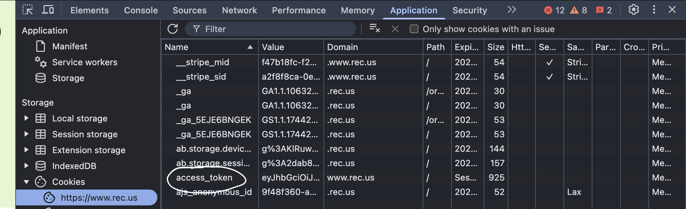

I wrote a bot to book tennis courts in San Francisco.
Because the courts were always gone before I could even click
If you play tennis or pickleball in San Francisco, you probably know rec.us. It's the website where you reserve public courts in the city. It looks simple enough: pick a court, pick a time slot, and you're done.

The problem is that everyone else is trying to book the same courts at the same time. Each court opens for registration at a specific time of day. For example, Alice Marble courts open about a week in advance at exactly 8:00 AM. And the good time slots are usually fully reserved within 5-10 seconds after opening.
So I wrote a Python script that reserves the court for me. Over a 3-month period, it successfully reserved 100+ tennis/pickleball courts, with an average runtime of about 1.5 seconds.
A quick note before anything else: this bot is not for gaming the system. I built it for personal and educational purposes, and I only used it to book courts for myself, for times I was actually going to play. I never booked extra courts "just in case", never resold anything, and never used it to keep other people off public courts. Public courts should stay public, and I don't want this project to be the reason someone else can't play. If you use the code, please use it the same way and follow rec.us's terms of service.
Why I made this bot
Honestly, I just wanted to play tennis. But reserving a court manually had 3 main issues:
You have to be really fast. As soon as registration opens, you have to click through the website before everyone else does. With 5-10 seconds before the courts are gone, one slow page load and you lose.
Every reservation needs SMS verification. You have to request a code, wait for the text message, and type it in. That takes even more time.
The timing is not always convenient. Alice Marble opens at 8:00 AM, which is too early for a lot of people.

So the goal was pretty clear. The script should be able to reserve a given court at a given time slot, and it should be faster than people clicking by hand. Ideally, also faster than other people's scripts.
How it works
Here's what happens every time the bot runs:
2 minutes before registration opens, the script uses Selenium to open rec.us and log in, just like a normal user. Then it grabs the access token from the browser's cookies. This token has to be attached to every request later on.
1 minute before, it asks rec.us to send a verification code by text message.
The phone number is a rented number on TextVerified, so the script just calls the TextVerified API to read the code.
As soon as registration opens, it submits the verification code.
Once the code is accepted, it sends the reservation requests with the court, date and time slot. If the response comes back OK, the court is ours.

The script is deployed on an AWS EC2 instance, and it's scheduled with crontab to run every day right before the court reservation opens. So I don't have to wake up at 8 AM anymore.
Technical challenges
Web crawling or calling the API directly?
There are two ways for a script to reserve a court:
Web crawling: the script opens the website and clicks through buttons, the same way a human would.
Calling the website's API directly: skip the UI completely, and send the same HTTP requests that the website sends behind the scenes.
Each method has its pros and cons. Web crawling is much easier to write, since you just tell Selenium what to click. The original version of my script actually did this. However, it resulted in a lot of failed attempts, because navigating pages and clicking buttons is just not fast enough when the courts are gone in 5 seconds.
Calling the API is harder to set up, but switching to it eliminated 5-6 seconds of runtime that were previously spent navigating and clicking. All things considered, I went with the second method, and I only kept Selenium for the login step.
Figuring out an API with no documentation
A natural question arises: which API? rec.us doesn't have any official documentation, so I had to open the network tab in my browser, make a reservation manually, and figure out which HTTP endpoints were being called.
One particular challenge was authentication. Every request has an Authorization header set to bearer <access_token>, and without it the requests just get rejected. The token is stored in a session cookie, so it can only be retrieved after the user logs in. That's why the script still logs in with Selenium first, and then takes the token from the cookies.

Request the verification code early
After experimenting with the verification code a bit, I found out that a code stays valid for up to 2 minutes. So instead of waiting until registration opens to request the code, the script requests it a minute before. By the time the courts open, the code is already sitting there, and we save some extra time on the actual reservation.
Try every court at the same time
Each location usually has multiple courts. For example, Alice Marble has 4 different tennis courts, and each one needs its own request. I only need one of them, but I don't know which one will still be open. If the script tries them one by one, by the time it gets to the 4th court, that one might already be taken too.
So the script uses multithreading to send the requests in parallel instead of waiting for each one to finish, so it can grab whichever court is still open.
rec.us blocks virtual phone numbers
This one was annoying. The obvious option for receiving the verification text is a virtual number, like one from Twilio. But as of Feb 2025, rec.us blocks virtual (VoIP) numbers. Using my personal number wasn't a good option either, because it's hard to connect a real phone to a script.
The fix was to rent a non-VoIP number on TextVerified, which has an API to read incoming text messages. That way the whole flow can run without me touching my phone.
What I've learnt
Look at what the website is actually doing
The UI is built for humans, not for speed. The biggest improvement in this project didn't come from writing smarter code, it came from opening the network tab and seeing what requests the website was sending. Once I understood that, the clicking was just extra time I didn't need.
Every second counts, so find where the seconds go
The script went from failing a lot to booking courts in about 1.5 seconds, and it wasn't one big change. It was a few small ones: using the API instead of the UI (5-6 seconds), requesting the code early, and sending requests in parallel. Each one only makes sense once you know which step is actually slow.
Build things that solve my own problem
Same lesson as my LeagueGuessr project. I didn't build this because it sounded like a cool project idea. I built it because I kept losing courts, and I really wanted to play. That made it very easy to stay motivated, and also very easy to tell if it was working: either I had a court on Wednesday, or I didn't.